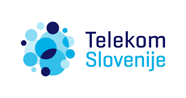
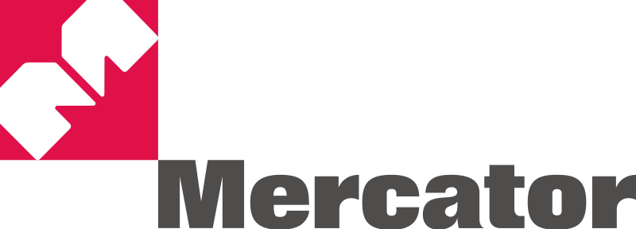
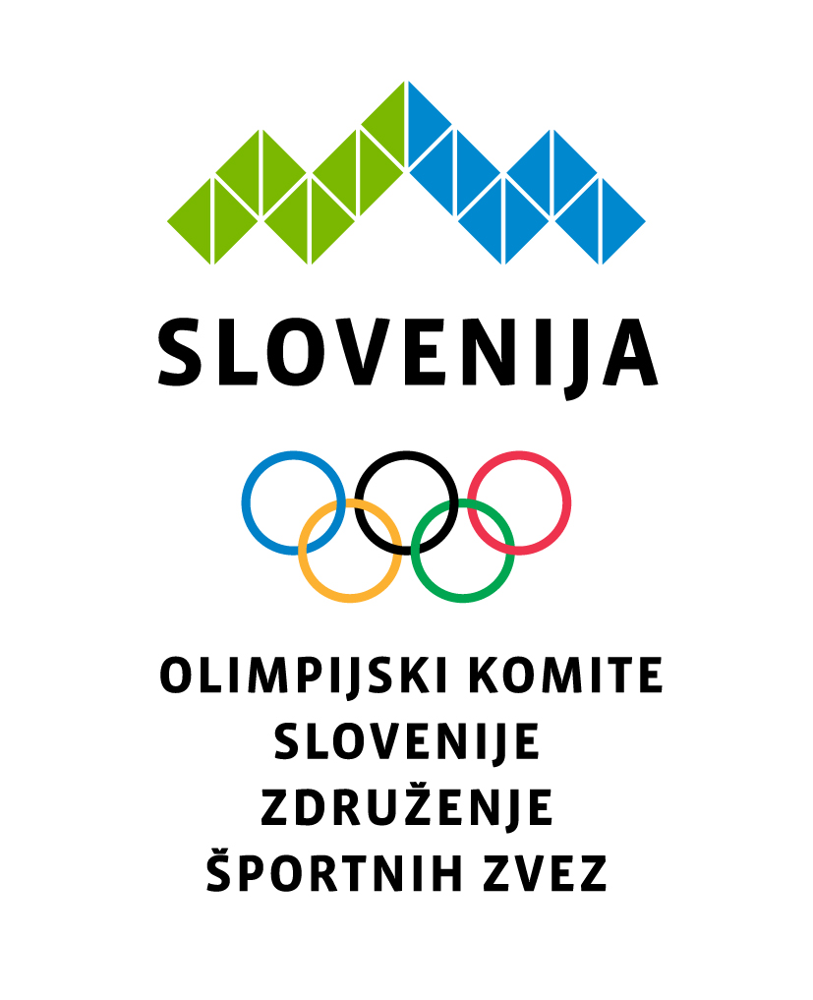

Sponzor 1

Slovenska Nogometna Skavtska Agencija (SFSA) je vodilna organizacija v Sloveniji, specializirana za odkrivanje in razvoj mladih nogometnih talentov. Naša agencija se ponaša z naprednimi trening metodami, vrhunsko infrastrukturo in strokovnim osebjem, ki mlade igralce pripravlja na profesionalno kariero. Sodelovanje s podjetjem Nike je ključnega pomena za naš uspeh. Nike nam zagotavlja vrhunsko športno opremo, ki omogoča optimalne pogoje za trening in igro. Poleg tega Nike podpira naše dogodke in projekte, kar prispeva k prepoznavnosti in razvoju naših igralcev na nacionalni in mednarodni ravni.
Sponzor 2

Slovenska Nogometna Skavtska Agencija (SFSA) je ponosna na svoje sodelovanje z Telekomom Slovenije, vodilnim ponudnikom telekomunikacijskih storitev v Sloveniji. Telekom Slovenije podpira naše projekte z napredno digitalno infrastrukturo, ki omogoča spremljanje treningov in tekem v realnem času. Sodelovanje nam omogoča tudi organizacijo virtualnih dogodkov in spletnih seminarjev za naše igralce ter trenerje, kar pripomore k njihovemu izobraževanju in razvoju. Z zanesljivimi telekomunikacijskimi rešitvami Telekom Slovenije pripomore k napredku naših igralcev in krepitvi naše agencije kot vodilne v nogometnem razvoju v Sloveniji.
Sponzor 3

Slovenska Nogometna Skavtska Agencija (SFSA) se veseli sodelovanja z Mercatorjem, vodilno slovensko trgovsko verigo. Mercator nam prinaša podporo v obliki prehranskih izdelkov za naše igralce, ki so ključni za njihovo uravnoteženo prehrano in optimalno telesno pripravljenost. S svojo mrežo trgovin po Sloveniji Mercator omogoča enostaven dostop do svežih in kakovostnih živil, kar je ključno za zdravje in dobro počutje naših športnikov. Sodelovanje z Mercatorjem krepi našo agencijo in omogoča boljše pogoje za rast in razvoj naših mladih nogometnih talentov.
Sponzor 4

Slovenska Nogometna Skavtska Agencija (SFSA) ima častno sodelovanje z Olimpijskim komitejem Slovenije, nacionalno organizacijo, ki spodbuja šport, olimpijske vrednote in razvoj športnikov v Sloveniji. Olimpijski komite Slovenije nam pomaga pri organizaciji športnih dogodkov, seminarjev in treningov za naše mlade nogometne talente. S svojim strokovnim znanjem in izkušnjami na področju športa nam omogoča dostop do najboljših športnih praks in podporo pri izobraževanju naših športnikov. Sodelovanje z Olimpijskim komitejem Slovenije krepi našo agencijo in promovira športne vrednote ter vzpostavlja povezave z vrhunskimi športniki in športnimi programi v Sloveniji.